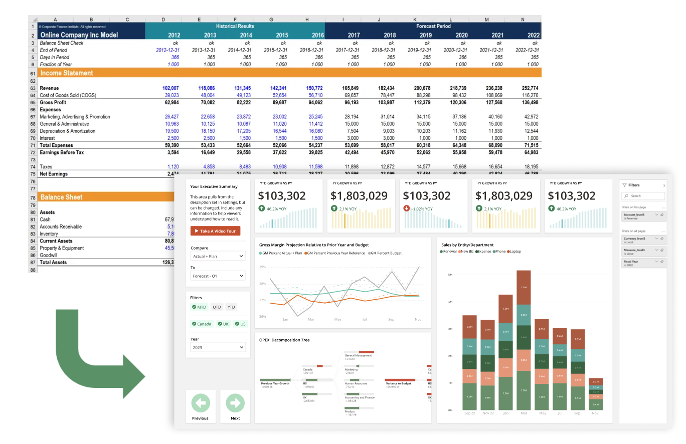
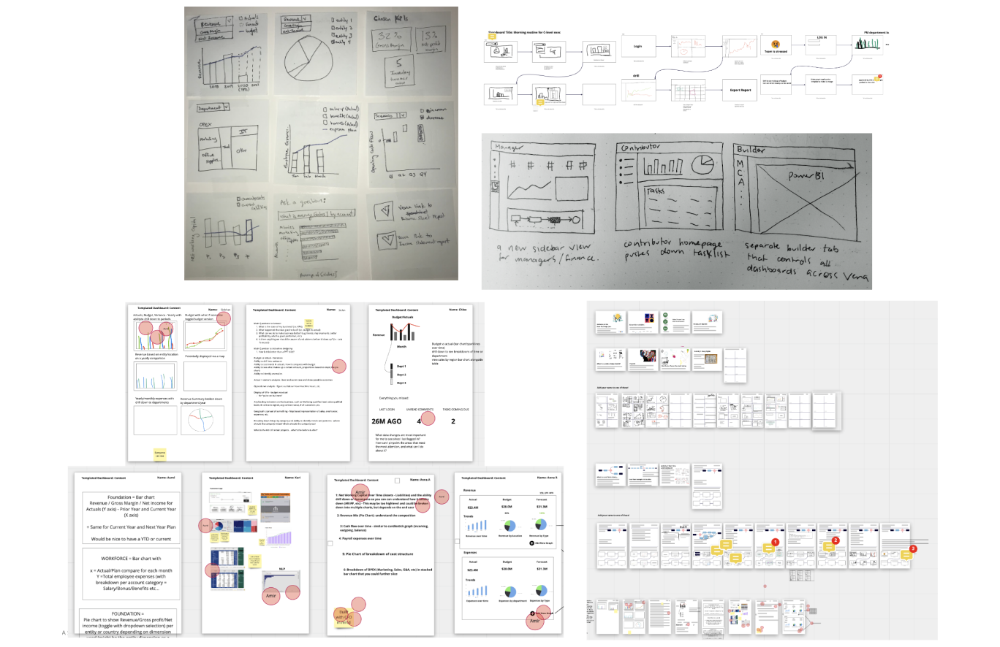
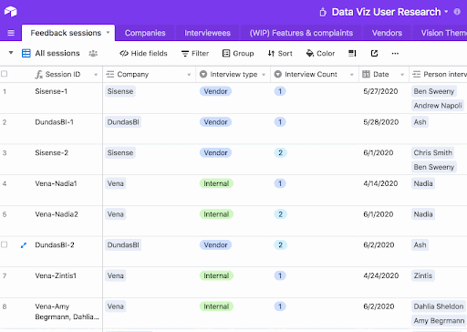
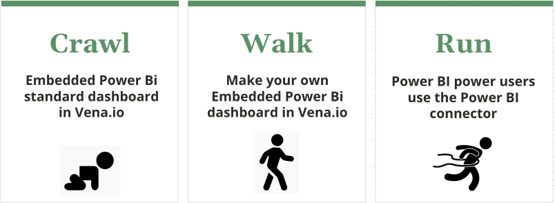
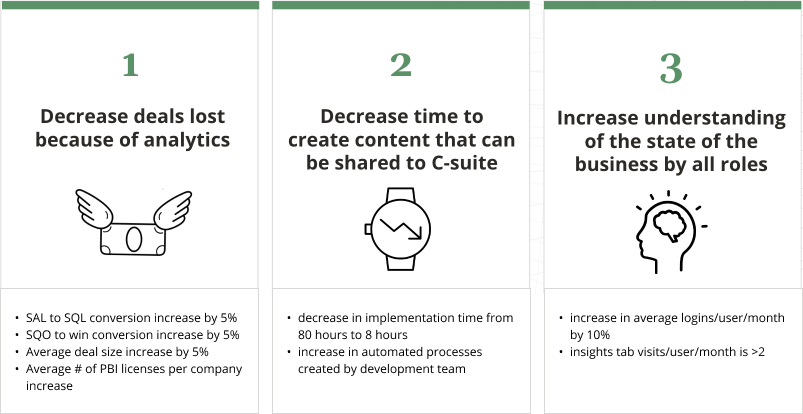
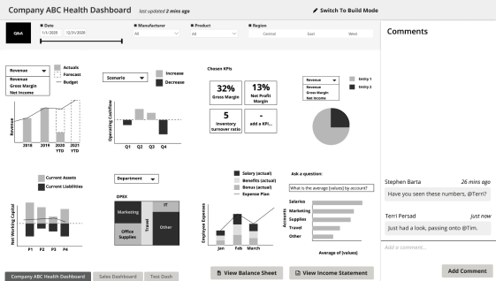
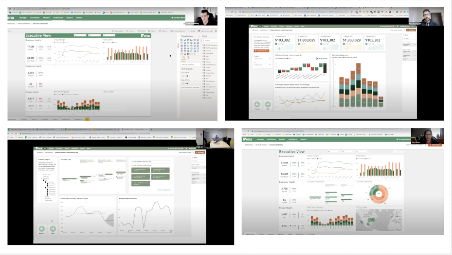
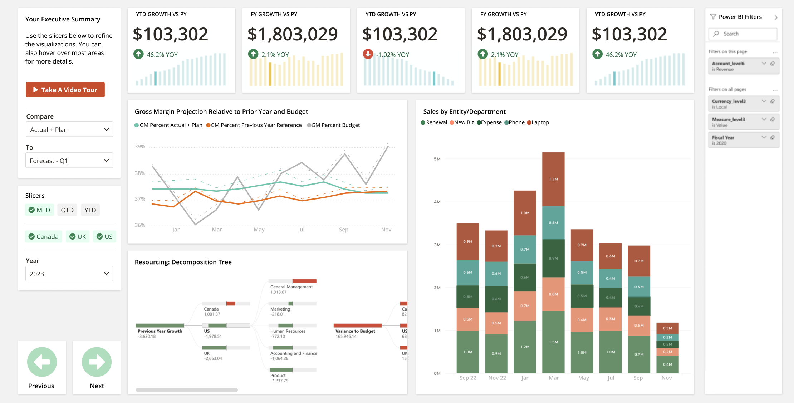
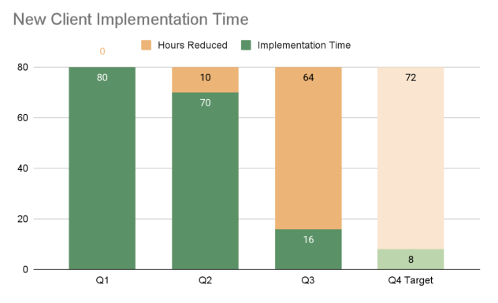
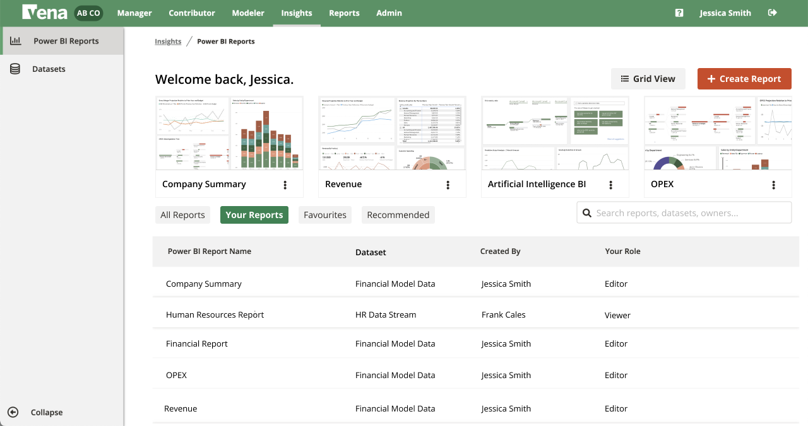

The goal of the project is to allow current Vena users to easily create and share visualizations of their data. They can then better understand the state of their business and make data-driven decisions.
Problem Definition
Financial analysts have no streamlined way to visualize or communicate the meaning behind their spreadsheet-based data. Microsoft’s Power BI tool is one of the world’s leading data visualization tools, assisting analysis to create visual graphs and dashboards out of their data. With Power BI, they can make data-driven business decisions and share insights with colleagues.
There are many tools that can complete similar tasks such as Tableau, Sisense and Qlik, but after much comparison of UI features, data load, licensing costs, compatibility with Vena and other factors, we decided to partner with Power BI. It has a robust featureset, but its web interface contains only a subset of the functions found in Power BI Desktop. Our task was to understand which features we would need that were beyond the current web interface, and enhance it with our own features built into the existing Vena web app.
Design Jams and Sprints
Vena had launched a pre-existing native dashboards feature that never really met its goals and had not been changed since before I started working at the company. We wanted to carefully consider the opinions of our internal colleagues regarding the new visualization experience. I conducted several design sprints and workshops with internal stakeholders in customer success, sales, support and implementation services.
External feedback was also extremely important to the success of the project. We completed over 140 individual calls with internal stakeholders and customers ranging from interviews to workshops to usability testing sessions. There was some pressure not to repeat what had happened with the original dashboards project, so I aimed to talk to as many people as I could.
Personas
Our interviews showed us that most companies are looking for ways to integrate visuals into their data reports, and especially leveraging artificial intelligence to make better business decisions. The difference lies in their skill in creating these visuals. Power BI Desktop can be overwhelming for beginners, but research showed us that only a subset of features was required for most of our less-skilled audience. Advanced users would continue their usual tasks inside their Power BI Desktop experience with a separate Vena data connector.
Allow me to introduce the crawler, the walker and the runner. The crawler is just starting their visualization journey and will enjoy building off of a pre-existing template with a simplified featurset. In contrast the runner may stay inside the Power BI Desktop interface they know and love, while using Vena as an easier way to share their completed reports with other Vena users. Using this mindset, we could create a stepped approach to make the experience fit for a wide range of people.
Measuring Success
With all of our research and notes in hand, we created a series of success metrics. These were useful to guide my wireframes, designs, and the direction of the project. Specifically in the demo phase, sales staff were eager to start demonstrating our integration with Power BI to prospects as soon as possible.
Wireframes
My first wireframes tested pretty well with a small set of six existing customers in different industries. They were especially excited about the experience being inside the existing Vena platform that they already knew how to use.
Closed Beta
After much testing and iteration, we were ready to program our closed beta. This involved setting up ten customers to use the product in exchange for feedback on how to make it better. I was particularly excited to chat with customers after they had made some of their own visualizations using our toolset.
Measuring against our early-set metric to reduce implementation time for our services team, we found areas to automate within the process of setting up dashboards. We also introduced the standard dashboard template, which could be used for some common requests customers would give the implementation team. So instead of building this in a custom way for each customer, they could now start from a pre-made template. This was huge because it also reduced the time taken for a customer to go from purchasing the product to actually gaining value from it.
Standard Dashboard Template
 Customer Quotes
We have done several rounds of usability testing and interviews on new feature additions to incrementally improve the experience over time. It’s been great to see the positive feedback roll in. This underlines the fact that this project is meeting needs on a level that our old dashboards feature just wasn’t.
"I like that Power BI can allow you to do more, but you have to think more - this embedded version you made takes the thinking out of it which is great” - major university
“It would be easy for my CFO to come into Vena and see these visuals, I like that” - professional sports team
“I like the “copy report” feature - I like to play around and make copies of things to learn from” - not for profit org
“We are very likely to use this” - construction company
“This is very very cool” - major university
“This is exactly something we have been wanting - big win to have dashboards in the Vena browser.” - not for profit org
"I love the Vena Power BI standard template, especially decomposition trees, they are so intuitive and easy to present the data when it cascades down” - major university
“Better than what I expected, much more user friendly. A lot of folks who don't use them, this will entice them to do it" - infotech company
“The execs would be floored by this if they saw it...” - risk management firm
The project is only in its infancy, but there are endless possibilities in how data visualizations can be used in every corner of this software. For now, all visualizations can be viewed as part of larger recurring reports that can be continually referenced and refreshed to keep up-to-date.
